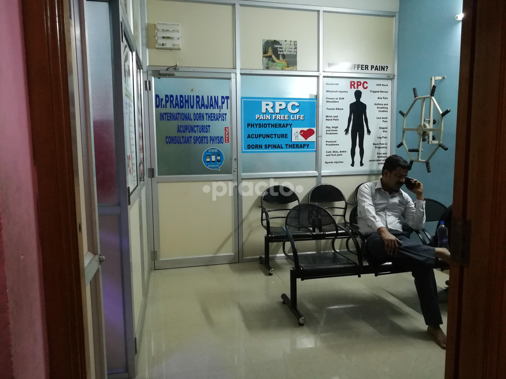
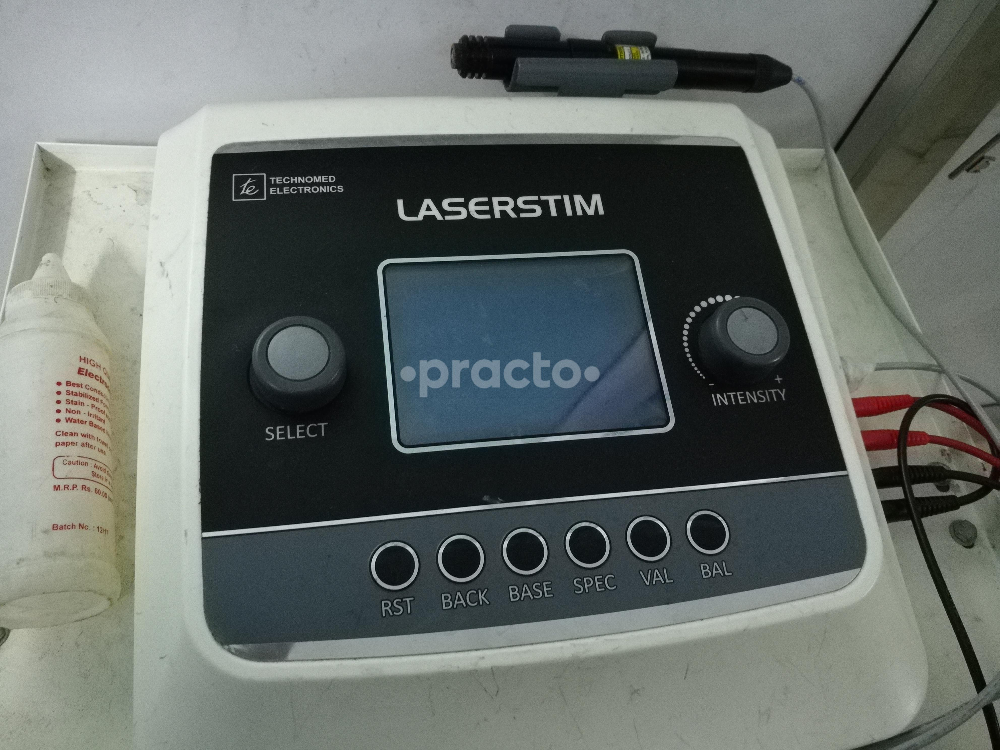
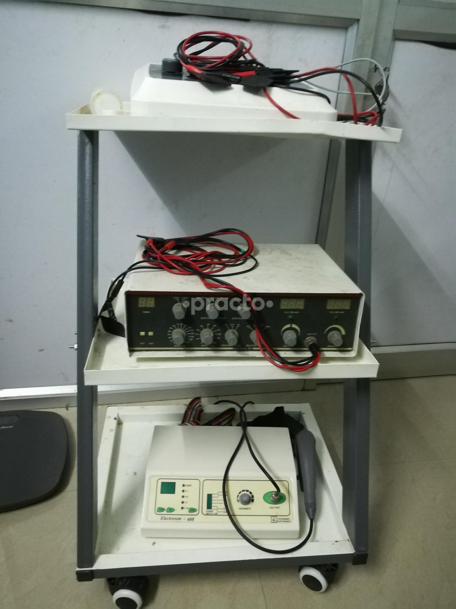

Pain-free living starts here.
Over 15,000 patients successfully treated without surgery. We diagnose the biomechanical root cause of your pain — restoring mobility, freedom, and strength.
Targeted relief for complex conditions.
From severe acute disc herniations and sciatica to stubborn sports injuries, we treat the biomechanical origin of your pain.
Spine, Neck & Disc Care
Slip disc, sciatica, cervical spondylosis, lumbar radiculopathy, and scoliosis. Gentle non-surgical correction.
Joint & Shoulder Pain
Frozen shoulder, rotator cuff tears, bursitis, arthritis, and tennis elbow. Deep tissue photobiomodulation.
Knee, Foot & Heel Pain
Plantar fasciitis, calcaneal heel spurs, knee osteoarthritis, and Achilles tendinitis resolved with acoustic shockwaves.
Sports & Post-Surgical
ACL rehabilitation, meniscus recovery, ligament sprains, total knee/hip replacement rehab, and athletic conditioning.
Evidence-informed therapies for rapid healing.
Combining European manual techniques with precision physical modalities for deep tissue cellular repair.
LASERSTIM Scanning Laser
Deep tissue photobiomodulation stimulates mitochondrial ATP synthesis, eliminating acute inflammation and accelerating cellular repair.
Radial Shockwave Therapy
Acoustic pressure waves break down stubborn calcifications, dissolve bone spurs, and restart dormant tissue healing cascades.
Dorn Spinal Alignment
Gentle, active-dynamic manual therapy to realign vertebrae and pelvic joints without aggressive thrusts or violent cracking.
Clinical Dry Needling (CDNT)
Precision intramuscular trigger point deactivation resets contracted motor endplates, releasing chronic neck, back & hip knots.
TECAR Radiofrequency
Capacitive and resistive diathermy generates endogenous thermal biostimulation, dramatically speeding knee arthritis recovery.
Kinesio Cupping & IASTM
Negative pressure myofascial decompression and stainless-steel instruments release stubborn scar tissue and fascial restrictions.
Say goodbye to pain.
Only 4 steps to active recovery.
From initial musculoskeletal palpation to long-term ergonomic stabilization, Dr. Prabhu Rajan ensures your recovery is structured, measurable, and permanent.
Physical Palpation
Comprehensive tactile assessment of musculoskeletal dysfunction, joint range of motion, and spinal alignment discrepancies.
Laser & Manual Therapy
High-power scanning laser stim, radial shockwave, or gentle Dorn joint realignment to eliminate acute cellular inflammation and nerve compression.
Rehabilitation Exercises
Targeted progressive resistance, core proprioceptive stabilization, and myofascial release to restore functional kinetic movement.
Long-term Stabilization
Customized ergonomic coaching, home maintenance routines, and posture re-education to prevent recurrent pain episodes.
Root-cause healing vs. temporary masking.
Here is why over 15,000 patients have trusted Dr. Prabhu Rajan since 2009 instead of living on endless medication or undergoing unnecessary surgery.
Temporary Masking
- × Painkillers and anti-inflammatory pills that only numb symptoms temporarily
- × Advice to wear lifelong neck collars or lumbar belts that weaken muscles
- × Premature surgical recommendations for common disc bulges
- × Pain recurs as soon as medication wears off
Permanent Root-Cause Recovery
- Thorough biomechanical and postural evaluation by Dr. Prabhu Rajan
- Gentle Dorn spinal alignment and targeted laser/shockwave therapy
- Active muscle retraining and ergonomic coaching to prevent recurrence
- Lasting mobility and freedom without reliance on pharmaceuticals
Expert physiotherapy delivered directly to your doorstep.
For post-surgical patients, elderly family members, stroke survivors, or acute bedridden cases unable to travel to our clinic. Our visiting therapists bring portable ultrasound, electrotherapy, and exercises directly to your bedside.
Take a look inside our healing center.
Clean, fully equipped, sanitized clinical environment in Chromepet with advanced imported therapeutic consoles.




What our patients say
Real recovery stories from verified Google, Practo, and Justdial reviews.
“I suffered from severe lower back pain and sciatica for over 8 months. After just 5 sessions with Dr. Prabhu Rajan using Dorn alignment and laser, I am completely pain-free and back to my daily morning walks.”
“Dr. Prabhu's clinic is exceptional. He treated my frozen shoulder when other clinics suggested surgery. His patience, manual mobilization skills, and home exercises restored 100% of my arm movement.”
“Extremely professional care. As a badminton player, my ankle sprain was treated with dry needling and laser therapy. I was back on the court in 2 weeks without any pain or instability.”
Take the first step toward lasting, root-cause pain relief.
Don't wait for pain to disrupt your work, sleep, or daily mobility. Consult Dr. Prabhu Rajan, PT at our Chromepet clinic or schedule an in-home evaluation today.